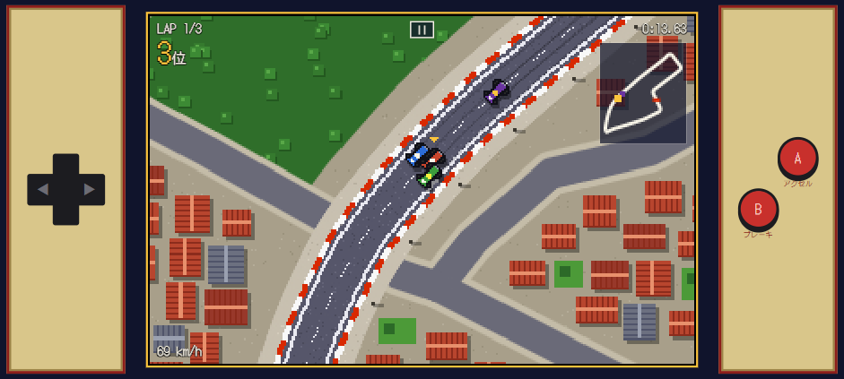
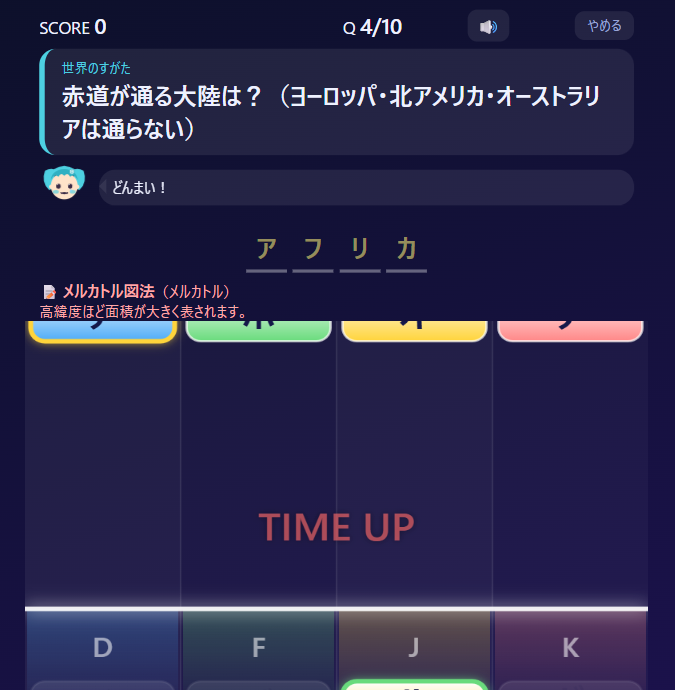
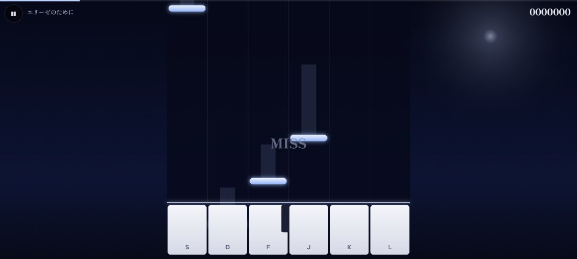
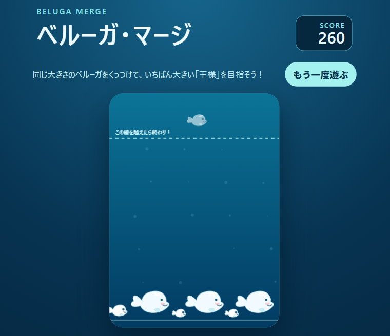
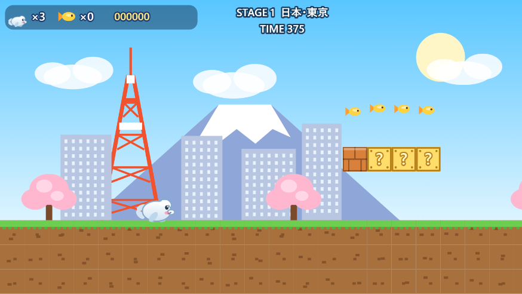

制作実績 地域の文化を題材にしたゲームから、資格試験の学習サービスまで。いずれもブラウザですぐにお試しいただけます。 音ゲー夜神楽 レーシング（江津市）江津ドットGP e-learning旅管なび 教育・音ゲー（地理）ちりビート 育成シミュレーションふわふわビション48週 シミュレーション出陣！戦国リーマン シミュレーション婚期に消ゆ サウンドノベルかみあわない夜 ノベル＋音ゲーさよならD シューティングベルーガ防衛戦 タワーディフェンスベルーガ・バブルディフェンス パズルベルーガ・マージ アクションベルーガの世界大冒険 ミニゲームベルーガ大作戦 宇宙シューティングNEKO DEBRIS パズルまるねこパズル 地動説・天動説にゃんこオゾンガード